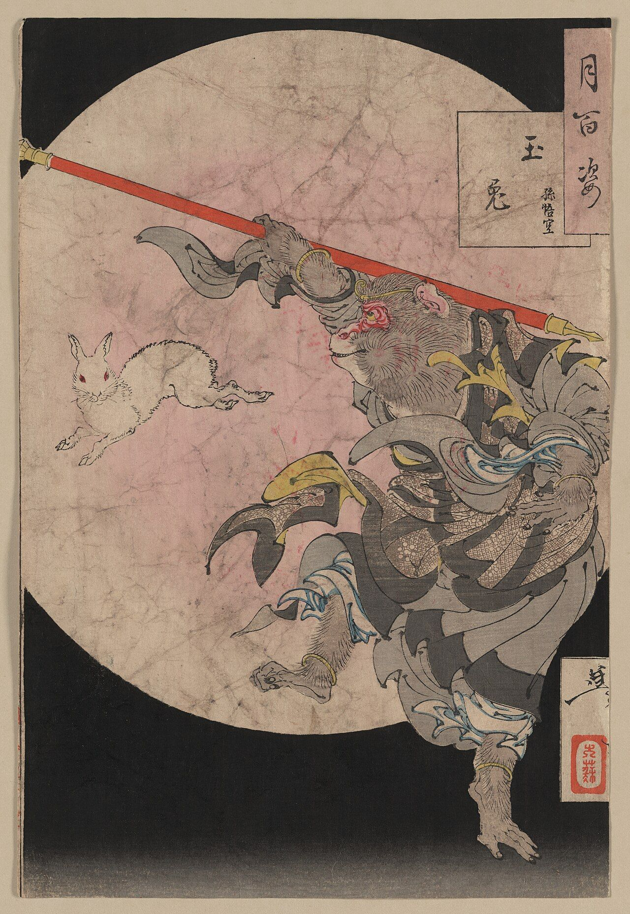
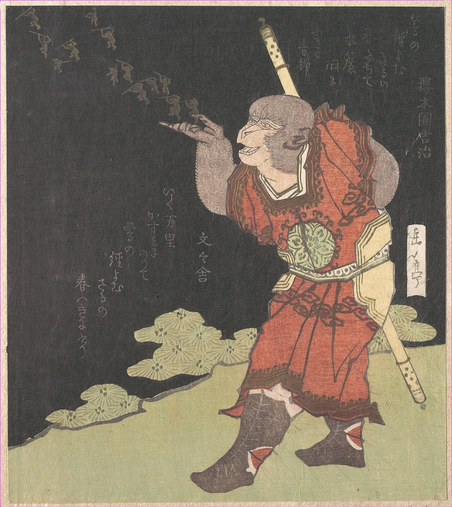
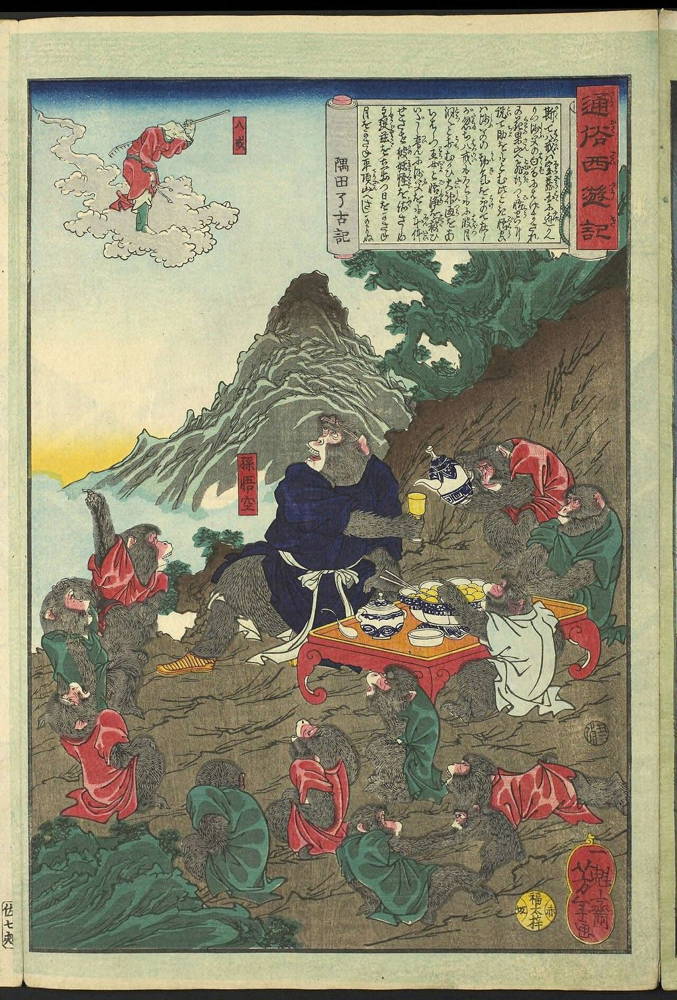
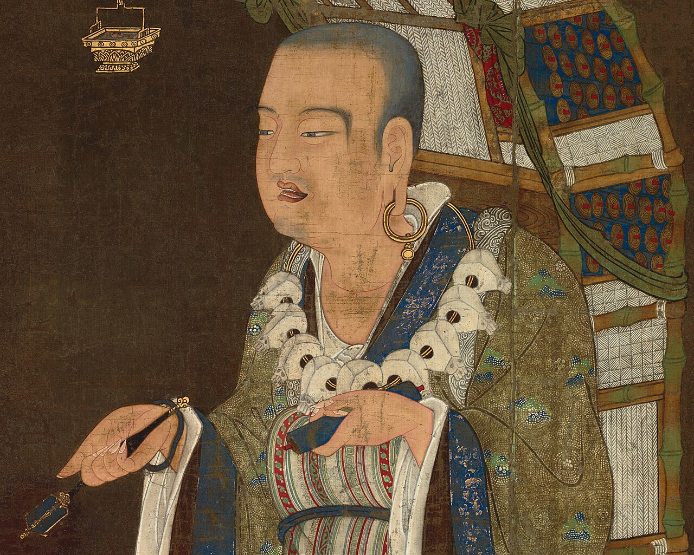
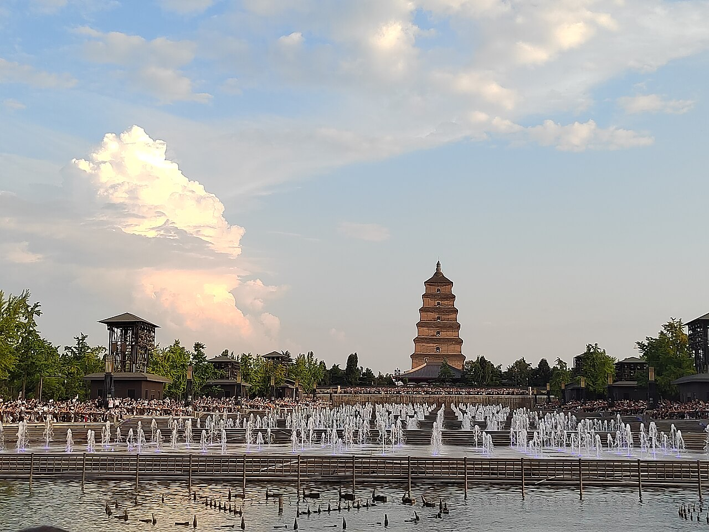
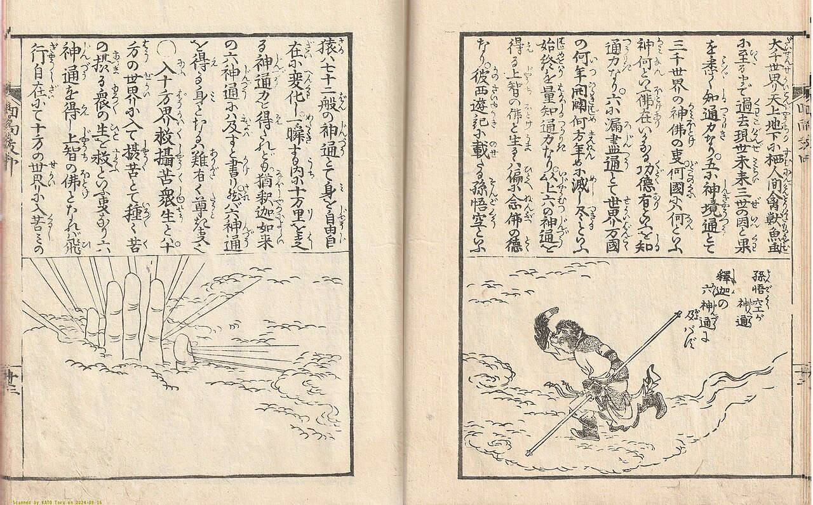
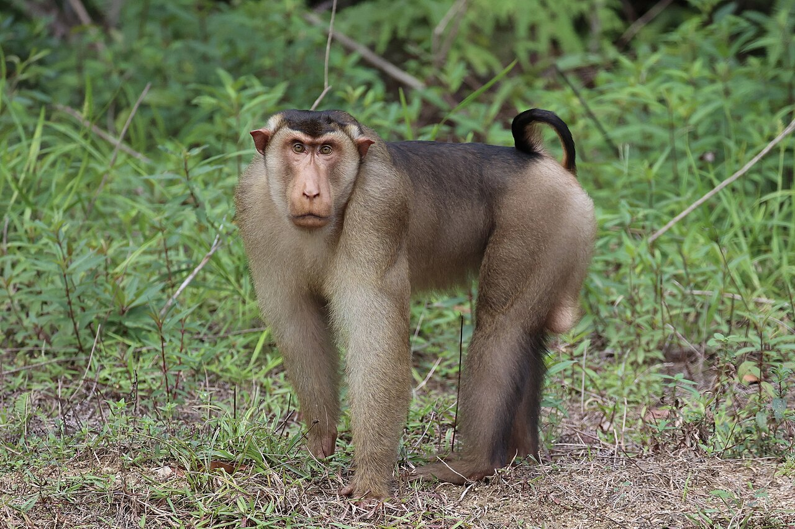
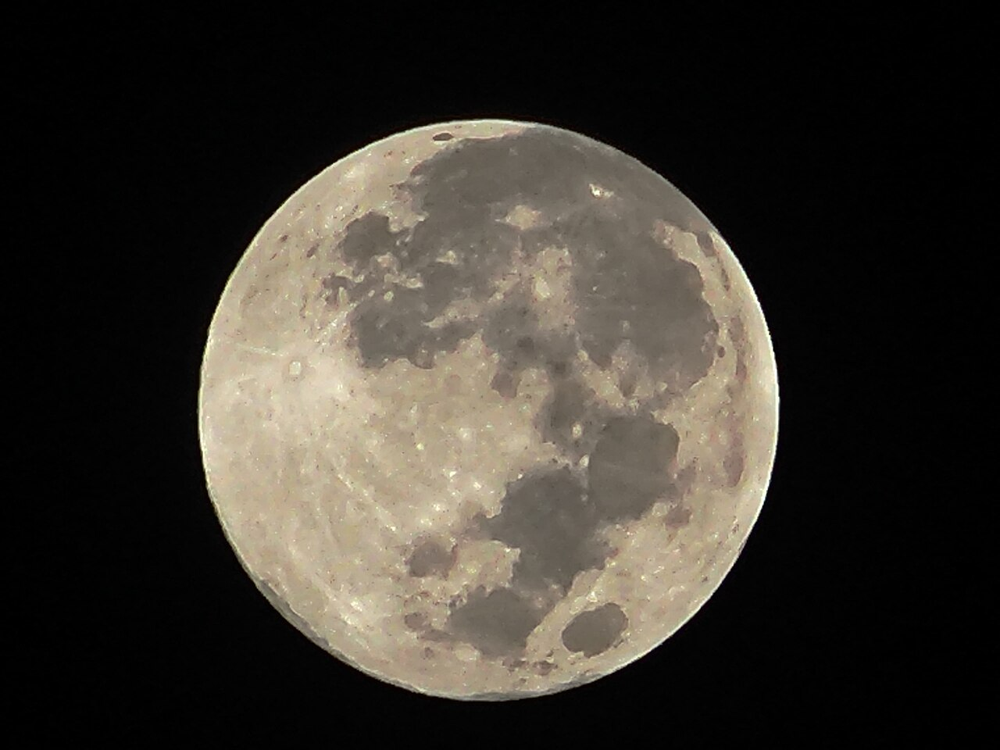

エンタメ Entertainment孫悟空は、なぜ途中でしっぽがなくなった？
『ドラゴンボール』の連載の始まりにはあった悟空のしっぽ。『西遊記』との対応表や1300年をたどる年表をめくりながら、鳥山明さんがインタビューで語った理由を探しに行きましょう。あのしっぽは、なぜ付けられ、なぜ消えたのでしょう？
2026.10.31 UP 約5分で読める 文：SOMOSOMO編集部
絵：玉兎 孫悟空／月岡芳年（1880年代、パブリックドメイン）
週刊少年ジャンプの1984年51号。11月20日に発売されたこの号で、鳥山明さんの新しい連載『ドラゴンボール』が始まりました。山奥にひとりで暮らす主人公の少年・孫悟空のお尻には、サルのようなしっぽが生えていました。
ところが連載が進むと、悟空のしっぽはいつの間にか見えなくなります。2024年3月に68歳で亡くなった鳥山さんは、生前のインタビューで、しっぽを付けたわけと、なくしたわけを語っていました。孫悟空は、なぜ途中でしっぽがなくなったのでしょうか。
In a word
鳥山さんの話によれば、しっぽは一目で悟空とわかる目じるし として付けたものの、描くうちにじゃまになった からです。物語の中でも、しっぽのある悟空は満月を見ると大猿に変身してしまうため、やがて二度と生えないようにされました。
01
The Model
名前も、旅の仲間も、『西遊記』から来ている
悟空という名前は、中国の古典『西遊記（さいゆうき）』の主人公、孫悟空（そんごくう）から来ています。『西遊記』の悟空は石から生まれたサルで、お坊さんの三蔵法師（さんぞうほうし）を守りながら、インドへお経（仏の教えを書いた本）を取りに行きます。
鳥山さんは1995年5月のインタビューで、『西遊記』をもとに話を作ろうと考えた、と振り返っています（以下、鳥山さんの言葉は英訳をもとにした編集部の要約です）。ブルマは三蔵法師、ウーロンは猪八戒（ちょはっかい）、ヤムチャは沙悟浄（さごじょう）にあたるといわれます（作者が示した対応ではありません）。
道具も『西遊記』から来ています。悟空がふるう、のび縮みする棒「如意棒（にょいぼう）」は、もとの悟空の持ち物でした。乗って空を飛ぶ雲「筋斗雲（きんとうん）」は、もとは持ち物ではなく、ひと跳びで十万八千里（とほうもなく遠いという意味）を飛ぶ宙返りの術です。
旅の目的は、お経から7つのドラゴンボールに変わりました。そして、もう一つ大きく変わったのが悟空の姿です。
Fig.01 『西遊記』と『ドラゴンボール』の対応表
『西遊記』
『ドラゴンボール』
孫悟空 孫悟空
三蔵法師 ブルマ
猪八戒 ウーロン
沙悟浄 ヤムチャ
如意棒 如意棒
觔斗雲 筋斗雲
天竺への旅 ドラゴンボール探し
石から生まれたサル しっぽのある少年
インドへ旅する僧 球を探しに出る少女
ブタの妖怪 変身するブタ
川の妖怪 荒野の盗賊
のび縮みする棒 祖父にもらった棒
ひと跳びで飛ぶ術 亀仙人にもらった雲
お経を取りに行く 7つの球を集める
見どころは、赤い枠の1行目。名前は同じでも、サルだった悟空は「しっぽのある人間の少年」になりました。觔斗雲は『西遊記』での字で、『ドラゴンボール』では筋斗雲と書きます。人物の対応は一般にいわれているもので、作者が示したものではありません。編集部が作図。
『西遊記』の悟空は、サルの姿そのものです。日本でも江戸時代から、毛むくじゃらのサルとして何度も絵に描かれてきました。ところが『ドラゴンボール』の悟空は人間の少年の姿で、サルらしさはしっぽにしか残っていません。


江戸の絵の悟空は、サルそのもの 左は、自分の毛を吹いて分身のサルを生み出す悟空。右は、サルたちに囲まれた悟空で、左上の雲に乗る人物のそばには、小さく「八戒」と書かれています。どちらも顔も体もサルの姿です。絵：The Monkey King Songokū ／八島岳亭（1824年ごろ、CC0、メトロポリタン美術館）、通俗西遊記 孫悟空と八戒 ／月岡芳年（1865年、パブリックドメイン、フランス国立図書館）
02
The Journey
サルの悟空は、海を渡って日本で何度も描き直されてきた
『西遊記』のもとになったのは、唐（とう）の時代のお坊さん、玄奘（げんじょう、602〜664年）の旅です。玄奘は629年ごろ、禁を破って都の長安（いまの西安）を出発し、インドで学んで経典を持ち帰りました。
それを納めるため652年に建てられた大雁塔（だいがんとう）は、建て直しや修理を重ねながら、いまも西安に立っています。


実在した「三蔵法師」と、その塔 左は、インドへ旅する玄奘を描いた鎌倉時代（14世紀）の絵で、東京国立博物館が所蔵しています。右は、いまの西安の大雁塔です。絵：玄奘三蔵像（部分） ／作者不詳（14世紀、パブリックドメイン）、写真：Giant Wild Goose Pagoda 20240806 05 ／沈澄心（2024年、CC0）
玄奘の旅は、語り物や劇で何百年も語りつがれるうちに、サルや妖怪が活躍する冒険物語へと変わっていきました。明（みん）の時代に長編の小説にまとめられ、いま残るいちばん古い版は1592年に南京で出たものです。作者は呉承恩（ごしょうおん）とされますが、異論もあります。
日本では江戸時代から絵入りの本や浮世絵で親しまれ、戦後も手塚治虫さんの漫画『ぼくの孫悟空』（1952年連載開始）や東映動画のアニメ映画『西遊記』（1960年）など、悟空はくり返し描き直されてきました。

江戸の本に描かれた「お釈迦様の手のひら」 1864年に大坂（いまの大阪）で出た本の挿絵です。どこまで飛んでも、お釈迦様の手のひらから出られなかったという『西遊記』の有名な場面で、右のページでは悟空が雲の上を走り、左のページにはお釈迦様の大きな指が描かれています。右のページの文の最後の行に「孫悟空」の名があります。絵：孫悟空と釈迦の手のひら ／松川半山（1864年、パブリックドメイン）
Fig.02 玄奘の旅から『ドラゴンボール』まで
中国のできごと
日本のできごと
629頃
玄奘が長安を出発
インドへ仏教を学びに
652
大雁塔が建つ
持ち帰った経典を納める
1592
現存最古の『西遊記』
明の時代、南京で出版
1824頃
江戸の版画に孫悟空
八島岳亭の作品（1章の左の絵）
1952
手塚治虫『ぼくの孫悟空』
「漫画王」で連載開始（〜1959）
1960
東映動画『西遊記』
手塚作品をもとにしたアニメ映画
1984
『ドラゴンボール』
週刊少年ジャンプで連載開始
見どころは、黒から赤へ移るところ。中国で約1000年かけて育った物語が、江戸時代から日本でくり返し描かれ、『ドラゴンボール』へつながりました。英語版Wikipedia、手塚治虫公式サイトなどをもとに編集部が作図。
03
The Mark
しっぽは、岩の陰でもわかる目じるしだった
では、なぜ人間の少年にしっぽを付けたのでしょう。1995年5月のインタビューで鳥山さんは、はじめは悟空を『西遊記』のとおり本物のサルにするつもりだったものの、それでは新しさがないので普通の人間の少年にした、という趣旨で答えています。
ただ、普通の少年では、ほかの人物と見分けがつきません。連載の前年に描いた短編『ドラゴンボーイ』（1983年、前後編）の主人公には、翼がありました。同じような目じるしがほしいと考えて、しっぽを付けたといいます。岩の陰に隠れていても、しっぽが見えれば悟空だとわかる、というねらいです。
2015年10月のインタビューでは、担当編集者の鳥嶋和彦（とりしまかずひこ）さんに何か特徴がほしいと言われて付けた、と語っています。

しっぽひとつで「サルだ」とわかる マレーシアで撮られたブタオザルです。体の後ろで上に巻いた、短いしっぽが目を引きます。人間の少年にしっぽ1本を足すだけで、悟空はサルの悟空とつながりました。写真はイメージです。写真：Macaca nemestrina 508679441 ／Andrew Holle（2025年、CC0）
04
The Lost Tail
じゃまになって消え、あとから「意味」が与えられた
ところが、そのしっぽが鳥山さんを困らせます。同じ2015年のインタビューで鳥山さんは、しっぽはとにかくじゃまで、悟空がどうやってズボンをはくのかを考えるのが面倒になり、最後にはなくしてしまった、という趣旨で話しています。
物語の中でも、しっぽには困った秘密がありました。しっぽのある悟空が満月を見ると、巨大なサル「大猿（おおざる）」に変身して暴れてしまうのです。しっぽは切られては生え直し、やがて神様（物語の中で地球を見守る神）の手で、二度と生えないようにされます。

しっぽのある悟空にとって、満月は危険のしるし 作中では、しっぽがあるかぎり、この丸い月を見ることが変身の引き金でした。写真はイメージです。写真：Full moon. 010226 ／Tumeiyo1（2026年、CC0）
しっぽの「理由」は、最初から決まっていたわけではありません。1987年11月に出た本の一問一答では、悟空にしっぽがある理由を問われ、先祖返り（遠い祖先の特徴が子孫に現れること）のようなもの、という趣旨で答えています。
1995年7月のインタビューでも、しっぽと大猿を考えたときは、悟空が宇宙人だとは思っていなかったと語りました。
答えが示されたのは1988年10月です。物語に宇宙から来た一族「サイヤ人」が現れ、しっぽと大猿はその一族の特徴だったと説明されます。目じるしとして付けたしっぽは、じゃまになって消えたあとで、物語の大きな謎の答えになったのです。
Fig.03 悟空のしっぽがたどった道
連載の初め 目じるしに付ける 岩の陰でも悟空とわかるように 描くうちに じゃまになる ズボンのはき方を考えるのが面倒に 物語の中で 神様が消す 満月で大猿になる危険をなくす さらにその後 あとから意味がつく 宇宙から来た一族の特徴に
見どころは、3と4の順番。しっぽの意味が物語で明かされたのは、作者が「じゃま」と感じ、しっぽが消えるほうへ話が進んだあとでした。鳥山さんのインタビュー（Kanzenshuu の英訳）と日本語版Wikipediaをもとに編集部が整理。
05
By the Numbers
しっぽの少年の物語は、世界で読まれ続けている
519話 『ドラゴンボール』の話の数。週刊少年ジャンプで1995年まで、約10年半続き、単行本は全42巻Wikipedia 英語版 Dragon Ball (manga)
約 2.6億冊 世界で売れた『ドラゴンボール』の単行本の数（2022年時点）。日本では2014年までに約1億6000万冊Wikipedia 英語版 Dragon Ball (manga)
約 4年 連載の始まり（1984年11月）から、しっぽの正体につながる一族「サイヤ人」が初めて登場する回（1988年10月）までWikipedia 英語版 Dragon Ball (manga)、Kanzenshuu
Here's the Fun Part
ここが面白い！
『西遊記』の第6回。天界で暴れた悟空は、神の二郎真君（じろうしんくん）に追われ、小さな廟（びょう、神をまつるほこら）に化けて隠れます。大きく開けた口を門に、歯を扉に、舌を仏像に、目を窓に変えました。
ところが、しっぽだけは始末に困り、後ろに立てて旗竿（はたざお）にしてしまいます。二郎真君は、後ろに旗竿の立つ廟など見たことがない、と笑い、悟空だと見破りました。
岩の陰に隠れても、しっぽでわかる──鳥山さんが語った目じるしの考えは、400年以上前の物語でも、悟空の正体を明かすしかけになっていたのです。鳥山さんがこの場面を意識していたかどうかを語った言葉は、見つかっていません。
しっぽは、昔から「これは悟空だ」とわかる目じるしだったのです。
次に悟空の絵を見かけたら、どこかにしっぽがのぞいていないか、探してみてください。
出典・参考
Daizenshuu 2: Akira Toriyama Super Interview （Kanzenshuu による英訳。原文は『ドラゴンボール大全集』2巻 STORY GUIDE、集英社、1995年8月。取材は1995年5月23日。記事中の鳥山さんの言葉は、この項目以下すべて英訳をもとに編集部が要約したもの）：『西遊記』をもとに話を作ろうとしたこと、はじめは悟空を本物のサルにするつもりだったが人間の少年にしたこと、『ドラゴンボーイ』の主人公に翼があったので目じるしがほしかったこと、岩に隠れていてもしっぽが見えれば悟空とわかること。記事中の言葉は英訳をもとに編集部が要約したものDragon Ball Super History Book: Akira Toriyama Interview （Kanzenshuu による英訳。原文は『30th ANNIVERSARY ドラゴンボール 超史集―SUPER HISTORY BOOK―』、集英社、2016年1月。取材は2015年10月）：サルから人間に変え、編集者の鳥嶋さんに特徴を求められてしっぽを付けたこと、しっぽがじゃまで、ズボンのはき方を考えるのが面倒になり、最後になくしたこと。記事中の言葉は英訳をもとに編集部が要約したものDaizenshuu 4: Akira Toriyama Super Interview （Kanzenshuu による英訳。原文は『ドラゴンボール大全集』4巻 WORLD GUIDE、集英社、1995年10月。取材は1995年7月24日）：しっぽと大猿を考えたときは、悟空が宇宙人だとは思っていなかったことAdventure Special: Toriyama Q&A （Kanzenshuu による英訳。原文は『ドラゴンボール アドベンチャースペシャル』、1987年11月18日）：しっぽがある理由を問われ、先祖返りのようなもの、という趣旨で答えたことRumor Guide: Goku's alien origin was foreshadowed （Kanzenshuu）：上の2つの発言の整理Dragon Ball (manga) （Wikipedia 英語版）：週刊少年ジャンプ1984年51号（1984年11月20日発売）から1995年25号まで連載、全519話・42巻、短編『ドラゴンボーイ』（1983年、前後編）、ブルマ・ウーロン・ヤムチャと『西遊記』の人物の対応（作者が示したものではない）、日本での販売部数（2012年に約1億5600万冊、2014年に約1億5950万冊）、世界の販売部数（2022年に2億6000万冊）Goku （Wikipedia 英語版）：悟空のモデルが『西遊記』の孫悟空であること、如意棒・筋斗雲、満月で大猿に変身すること孫悟空 (ドラゴンボール) （Wikipedia 日本語版）：しっぽがある状態で満月を見ると大猿に変身すること、神様によってしっぽが二度と生えないようにされたことDragon Ball Chapter 195 （Kanzenshuu）：サイヤ人のラディッツが初めて登場した回が、週刊少年ジャンプ1988年45号（1988年10月4日発売）であることAkira Toriyama （Wikipedia 英語版）、鳥山明さん死去、68歳 （CNN.co.jp、2024年3月9日）：2024年3月1日に68歳で死去、3月8日に発表Journey to the West （Wikipedia 英語版）：明代の小説で作者は呉承恩とされるが異論もあること、現存最古の版は1592年に南京で出たこと、玄奘の旅が下敷きであることSun Wukong （Wikipedia 英語版）：『西遊記』の悟空の觔斗雲が、ひと跳びで十万八千里を行く宙返りの術であること、如意棒が悟空の武器であること西遊記 第六回 （維基文庫）：悟空が廟に化け、しっぽだけ始末できずに旗竿にし、二郎真君に見破られる場面Xuanzang （Wikipedia 英語版）：玄奘（602〜664年）が629年（627年とする説もある）に禁を破って長安を出発し、インドで学んだことGiant Wild Goose Pagoda （Wikipedia 英語版）：652年に玄奘の経典を納めるために建てられ、その後、建て直しや修理を重ねてきたこと、2014年に世界遺産「シルクロード：長安－天山回廊の交易路網」の一部になったことぼくのそんごくう 、西遊記 （手塚治虫 公式サイト）：「漫画王」（秋田書店）に1952年2月号〜1959年3月号まで連載、1960年8月14日公開の東映動画『西遊記』の原作写真・絵：月百姿 玉兎 孫悟空 ／月岡芳年（1880年代、パブリックドメイン、アメリカ議会図書館）。本文中の写真・絵のクレジットは、それぞれの下に記しています（いずれも CC0 またはパブリックドメイン）。作品の場面やキャラクターの画像は使っていません